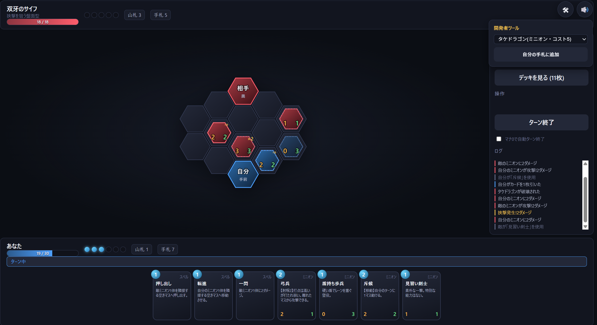
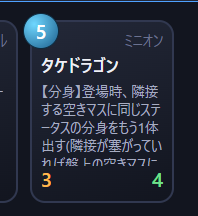
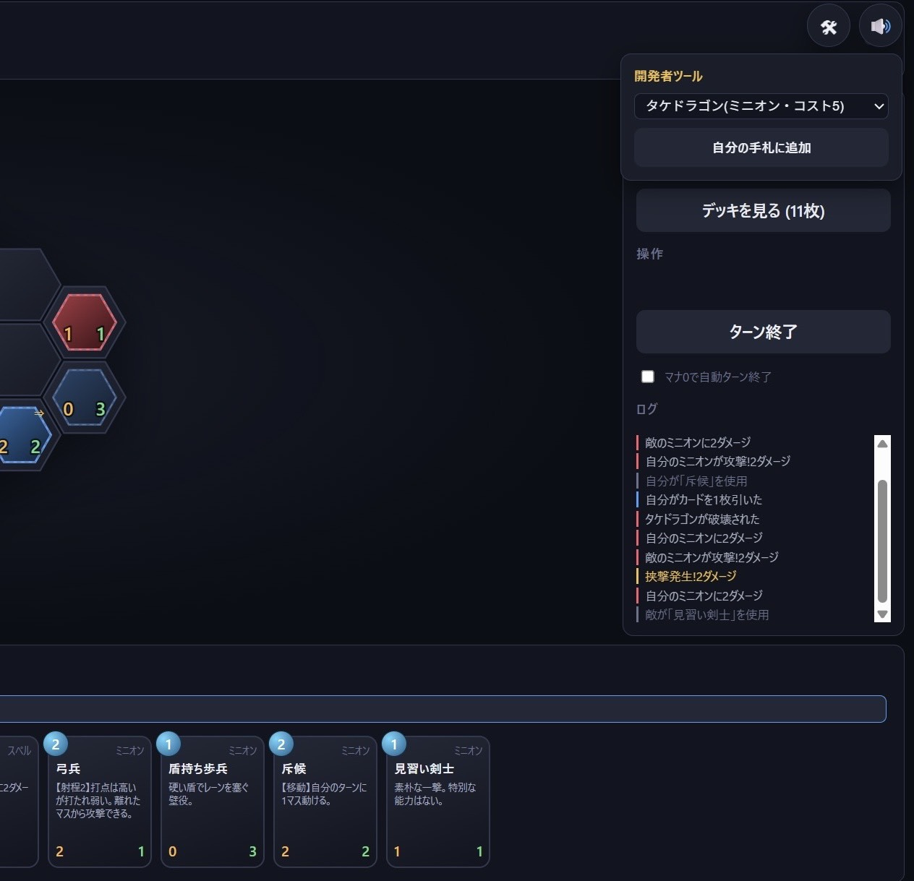

プログラミング未経験の私が、AIで「思い出のゲーム」を少しだけ蘇らせた話
サービス終了で消えたゲーム
かつて夢中になって遊んでいた、カードゲームとボードゲームの要素を掛け合わせたソーシャルゲームがありました。しかしそのゲームはサービスを終了し、「もう二度と遊べない」ものになってしまいました。
私はプログラミングの経験が全くありません。それでも、AIの活用を学ぶ団体を運営する中で、ひとつの考えが浮かびました。「AIなら、あのゲームを再現できるんじゃないか」。そう思い立ち、Claude Code というAIコーディングツールで再現に挑戦しました。
私の仕事は「伝えること」と「遊ぶこと」だけ
制作期間はおよそ2日間。コードはすべてAIが書き、私がやったのは3つだけです。
記憶の中にあるゲームのシステムを言葉で伝えること。「こんなカードがあったら面白かったはず」というオリジナルカードのアイデアを出すこと。そして、テストプレイをして「ここが動かない」とAIに伝えること。この繰り返しで、ゲームは形になっていきました。極端に言えば、コードの中で何が起きているのか、私には分かっていません。それでも、ゲームは動いたのです。
一番苦労したのは、AIへの指示の出し方です。頭の中のイメージを正確に言語化する作業は想像以上に難しく、試行錯誤の中で Claude Code の利用制限に何度も引っかかりました。それでも投げ出さなかったのは、それだけ好きなゲームだったからです。

実際に動いている対戦画面。六角マスの盤面上でミニオン同士がぶつかり合う。

オリジナルカードのひとつ「タケドラゴン」。登場時に分身を出す能力を実装した。

動作確認用に用意した開発者ツール。カードを手札に追加してテストプレイを繰り返した。
完成度は3分の1。それでも、確かに動いた
正直に言えば、完成度は本家の3分の1程度です。オンライン対戦はできませんし、再現しきれていない要素もたくさんあります。
それでも、システムの核となる部分は動き、CPU対戦もできるようになりました。もう遊べないはずだったゲームに一部でも自分の手で触れ直せたこと、そして思い描いていたオリジナルカードを実際に動く形で実装できたこと。それだけで、挑戦した価値は十分にありました。
なお、元となった作品の権利に配慮してゲームは公開せず、身近な友人やマイダスのメンバーに遊んでもらうにとどめています。
「好き」があれば行動できる時代
この経験で実感したのは、AIの時代に問われるのは技術力そのものではなく、「何がしたいか」と「それをどう伝えるか」だということです。未経験の私でも、「好き」という気持ちとアイデアさえあれば、2日間で遊べるゲームを形にできました。完璧には程遠くても、「やりたい」を「やってみた」に変えられたこと自体が、数年前なら考えられなかったことです。
マイダスは「一人の学びを、みんなの武器に」を掲げる団体です。今回の挑戦もメンバーに共有し、団体の知見にしています。誰かの「やってみた」が、次の誰かの「やってみよう」につながる。そんな循環を、これからも作っていきたいと考えています。
- 坂本理樹(副代表) — 企画・言語化・テストプレイ・記事執筆